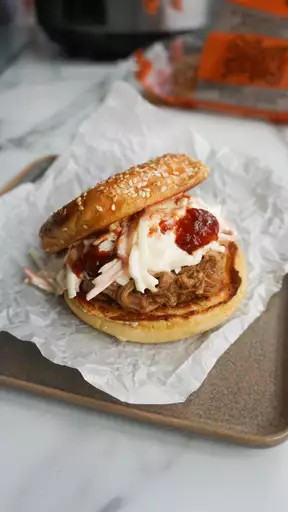

<main>
    <h1>Slow Cooker Texas Pulled Pork</h1>

        

        <h2>Description</h2>
             <p>Texas-style pulled pork made in the slow cooker and 
                 served on a buttered and toasted roll.
             </p>

                <h3>Ingredients</h3>
                <ul>
                    <li>Pork shoulder roast</li>
                    <li>Barbeque sauce</li>
                    <li>Light brown sugar</li>
                </ul>

                <h3>Steps</h3>
                <ol>
                    <li>Pour vegetable oil into the slow cooker.</li>
                    <li>Remove pork shoulder from the slow cooker.</li>
                    <li>Spread the inside of both havles of hamburger buns.</li>
                </ol>
</main>>